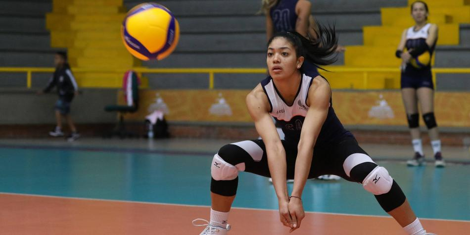

Amanda Coneo pasa la cuarentena lejos de casa y estudiando psicología
La jugadora de voleibol está en Francia y relata cómo vive estos momentos.

Amanda Coneo es una de las jugadoras referentes de la Selección Colombia de Voleibol. Vive confinada en un apartamento en Cannes (Francia), a la espera de que la pandemia del nuevo coronavirus pase.
El voleibolista que lleva meses buscando salir del encierro en Arabia
Este viernes se confirmó que la Liga de Voleibol de ese país, que se había cancelado el 13 de marzo, ha quedado suspendida. No ha sido fácil para ella vivir la situación y aunque hace ejercicio, tiene tiempo para adelantar los estudios de psicología, analizar la vida y añorar a su familia.
¿A qué se dedica en estos días?
Suspendieron la Liga y nos tocó quedarnos en casa. Estudio de manera virtual. Hago mis rutinas de ejercicios que nos dejó el preparador físico.
¿Tienen alguna opción de entrenar con balón?
Vivimos en una especie de villa, hay espacio para coger el balón y no perder el ritmo. Solo salgo a eso, a mercar, pero muy poco. Hay una cancha múltiple y allí ejercitamos.
¿Qué estudia?
Hago cuarto semestre de psicología. El tiempo que tengo lo dedico a estudiar, porque las notas deben ser mejores.
¿Cómo es la situación en Cannes?
Salgo a lo estricto, al supermercado, pero no se ve un alma en las calles. Uno debe tener un permiso especial para salir o para ejercitarse afuera. La policía controla todos los movimientos de las personas.
¿Francia ha respondido?
Es un país afectado. Acá hay mucho control, medidas estrictas. La gente ha entendido lo que hay que hacer.
¿Vive acompañada?
No, estoy sola. Acá en este conjunto solo vivimos seis jugadoras, pero las otras se fueron para sus casas. La villa tiene cuartos suficientes y son grandes. Nos quedamos con Islen Castillo, es una jugadora cubana, y con ella compartimos.
¿Y su familia en Colombia?
Terrible. No hay un día que no hable con mis padres. Vivir lejos la situación es bien complicado. Ellos se preocupan por mí. Cada rato nos vemos por el teléfono. Ellos están bien, menos mal. Me preocupo por ellos y siempre les inculco quedarse en casa.
¿Tuvo la oportunidad de regresar a Colombia?
Sí, pero tomé la decisión de quedarme para curarme en salud. Era difícil viajar por el temor al contagio. Había que llegar a Colombia a cuarentena y por eso era mejor tomar precauciones con eso del traslado.
¿Cómo iba su equipo?
Hago parte del Racing Cannes. Estamos en la primera división. El año pasado quedaron campeonas y en esta temporada íbamos de quintas, con igual puntaje del cuarto y a cuatro puntos del primero.
¿Los dirigentes han estado pendientes de usted?
Algunos directivos se han ido a Italia, otros se quedaron y están pendientes. Llega el pago normal y con eso, pues vamos a mercar.
¿Sus excompañeras en Italia qué le cuentan?
Me dicen que es crítica la situación. Hay una en Bérgamo, está bien, pero me dice que las personas no acatan las reglas, no ven las consecuencias, cada día hay más muertos, más infectados, y ella está preocupada. Las otras que están en Turín también están afectadas porque la gente no cumple y se expone.
¿Hay más jugadoras colombianas en Francia?
Sí. Margarita Martínez, Dayana Segovia y Yeisy Soto. Ellas están al norte. Hablo con ellas, están en sus casas y se ejercitan como pueden, no tienen novedades de salud.
¿Ha hablado con el técnico, Antonio Rizola?
Sí, hablé con él. Está muy pendiente de lo que pasa con nosotras. Él está bien, con su familia en Brasil.
¿Qué sabe de lo que pasa en Colombia?
El tema es complicado y uno acá lejos se asusta. Una vez pase todo esto iré. Cada vez los casos son más, hay gente que debe salir por el sustento y ese es un tema bien delicado. Hay otras personas que no respetan las normas que se han declarado.